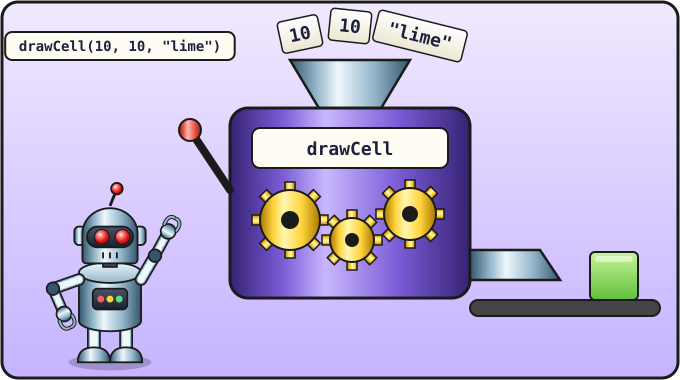

Урок 5 из 16 ⏱ 45 минут
Функции
Каждый раз писать fillStyle, а потом fillRect с четырьмя числами — скучно. Давай придумаем свою команду «нарисуй клеточку». Такие самодельные команды называются функциями.
- разделишь поле на клеточки, как тетрадный лист;
- напишешь функции
clearFieldиdrawCell; - узнаешь, что такое параметры функции;
- нарисуешь змейку, указывая номера клеточек, а не пиксели.
| 5 мин | Поле из клеточек |
| 10 мин | Первая функция без параметров: clearField |
| 15 мин | Функция с параметрами: drawCell |
| 15 мин | Рисуем по клеточкам, задания |

10, 10, "lime", дёргаешь рычаг (вызываешь drawCell) — и получаешь нарисованную клетку.Поле из клеточек
Змейка ползает по клеточкам. Холст у нас 400 на 400 пикселей. Если взять клеточку размером 20 пикселей, в ряду поместится 400 / 20 = 20 клеточек. Пронумеруем их с нуля: от 0 до 19.
Видишь правило? Пиксели = номер клеточки × 20. Пусть это умножение делает компьютер.
Первая функция
Функция — это рецепт: мы один раз записываем, что делать, и даём рецепту имя. Потом достаточно назвать имя, и компьютер выполнит все шаги. Начнём с простого рецепта «очисти поле»:
function clearField() {
ctx.fillStyle = "black";
ctx.fillRect(0, 0, 400, 400);
}
function— «сейчас будет рецепт»;clearField— его имя (clear field — «очистить поле»);()— круглые скобки обязательны, даже пустые;- между фигурными скобками
{ }— шаги рецепта. Их пишут с отступом, чтобы было видно, что они внутри.
Записанный рецепт сам по себе ничего не делает. Чтобы он сработал, его надо вызвать — написать имя со скобками:
clearField();
Ты уже знаешь функции, которые придумали до тебя: alert(...), console.log(...), ctx.fillRect(...). Теперь ты умеешь делать свои!
Функция с параметрами
Чтобы нарисовать клеточку, нужно знать, где и каким цветом. Эти сведения передают функции в скобках. Они называются параметрами:
function drawCell(x, y, color) {
ctx.fillStyle = color;
ctx.fillRect(x * size, y * size, size - 1, size - 1);
}
Когда мы пишем drawCell(3, 2, "lime"), функция получает три коробки: в x кладётся 3, в y — 2, в color — "lime". Дальше она умножает номера клеточек на размер size и рисует.
size и сравни.
Переписываем игру
Теперь замени скрипт в snake.html: старые строки с fillRect больше не нужны.
<script>, без отступа слева. В твоём файле эти строки сдвинуты вправо, потому что они внутри тега <script>. Так и оставь: компьютеру отступы не важны, они нужны людям, чтобы код было легче читать. Как всё выглядит целиком, всегда можно посмотреть в полном файле в конце урока.
let canvas = document.getElementById("game");
let ctx = canvas.getContext("2d");
let size = 20;
function clearField() {
ctx.fillStyle = "black";
ctx.fillRect(0, 0, 400, 400);
}
function drawCell(x, y, color) {
ctx.fillStyle = color;
ctx.fillRect(x * size, y * size, size - 1, size - 1);
}
clearField();
drawCell(10, 10, "lime");
drawCell(9, 10, "lime");
drawCell(8, 10, "lime");
drawCell(15, 10, "red");
Сохрани и обнови. Змейка из трёх кусочков смотрит вправо, а впереди неё лежит яблоко. Заметь, как легко теперь двигать кусочки: меняешь номер клеточки, и всё.
- Забыта закрывающая фигурная скобка
}: появится ошибка missing } after function body — «не хватает}после тела функции». - Функцию вызвали, но имя написано по-другому (
drawcellвместоdrawCell): ошибка drawcell is not defined.
- Нарисуй из клеточек первую букву своего имени.
- Поставь яблоко в каждый из четырёх углов поля. Какие номера у угловых клеточек? (Подсказка: последняя клеточка — 19, а не 20.)
- Сделай голову змейки другого цвета, например
"yellow". - ⭐ Напиши функцию
drawApple(x, y), которая рисует красную клеточку. Внутри она может просто вызыватьdrawCell!
📄 Весь файл snake.html после этого урока
<!DOCTYPE html>
<html>
<head>
<meta charset="utf-8">
<title>Змейка</title>
</head>
<body>
<h1>Змейка</h1>
<canvas id="game" width="400" height="400"></canvas>
<script>
let canvas = document.getElementById("game");
let ctx = canvas.getContext("2d");
let size = 20;
function clearField() {
ctx.fillStyle = "black";
ctx.fillRect(0, 0, 400, 400);
}
function drawCell(x, y, color) {
ctx.fillStyle = color;
ctx.fillRect(x * size, y * size, size - 1, size - 1);
}
clearField();
drawCell(10, 10, "lime");
drawCell(9, 10, "lime");
drawCell(8, 10, "lime");
drawCell(15, 10, "red");
</script>
</body>
</html>
Проверь себя
- Я знаю, чем отличается записать функцию от вызвать её.
- Я понимаю, что такое параметры
x,y,color. - Я умею переводить номер клеточки в пиксели: номер × 20.